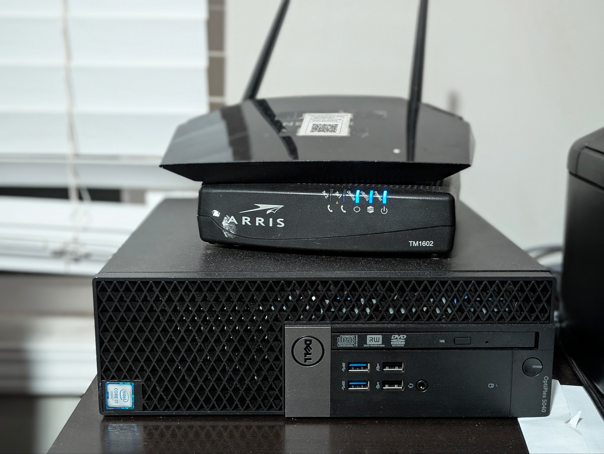
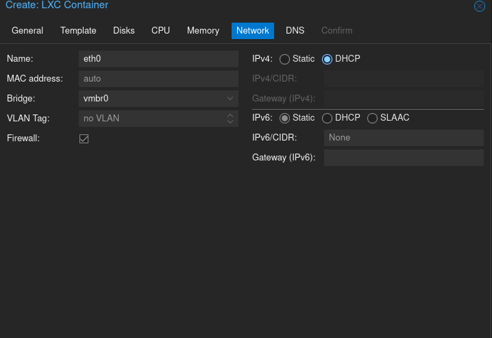

Architectural Overview: A High-Performance Proxmox Virtualization Environment
Phase 1: Hardware & Hypervisor
The foundation of this project began with a Dell Optiplex 5040 SFF. Converting a standard desktop into a Type-1 Hypervisor which requires specific BIOS adjustments for automatic startup and virtualization, primarily enabling VT-x and ensuring the boot order is optimized for the Proxmox environment.
Hardware Specs
Hardware Configuration Log
CHASSIS
Dell Optiplex 7050 SFF
PROCESSOR
Intel Core i5-7500 @ 3.40GHz
GRAPHICS
NVIDIA Dedicated GPU
STORAGE
2TB SATA SSD
PLATFORM
Proxmox Virtual Environment

Network Bridging & Container Provisioning
With the hypervisor live, I transitioned to configuring the logical network layers and resource pools required for the help desk environment
LOG ENTRY 02.1: NETWORKING
# Mapping physical NIC to Linux Bridge
# Interface: eth0 -> vmbr0
# Interface: eth0 -> vmbr0

Goal: Establishing L2 connectivity. By bridging the physical NIC to
vmbr0, I allowed the LXC container to interface directly with my physical network for DHCP assignment.
LOG ENTRY 02.2: RESOURCE ALLOCATION
# Defining Container Specs
# CPU: 2 Cores | RAM: 1GB | Disk: ZFS-Mirror
# CPU: 2 Cores | RAM: 1GB | Disk: ZFS-Mirror

Goal: Performance Optimization. Utilizing an LXC instead of a full VM reduces kernel overhead. I partitioned the ZFS pool specifically for the
osticket-ubuntu node to ensure high-speed I/O.
LOG ENTRY 02.3: SYSTEM INITIALIZATION
# Extracting Ubuntu-24.04-Standard Template
# Task Status: TASK OK
# Task Status: TASK OK

Goal: Verification. This log confirms the creation of the logical volume and the successful deployment of the Ubuntu template. The node is now initialized and ready for application-level configuration.